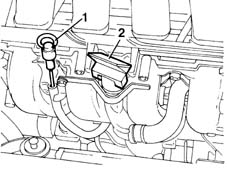
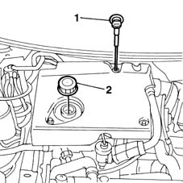

1084A10 ENGINE OIL - Check level and top up, if necessary
- Path
- Procedures > 10 ENGINE UNIT > 1084 ENGINE LUBRICATION SYSTEM > 1084A indicators/check devices > 1084A10 ENGINE OIL - Check level and top up, if necessary
- Kind
- repair procedure (removal / refitting; the operation number is the code)
- Applies to
- all engines; all production periods
- Interactive page
- https://sloeber94.github.io/elrnDB-fMltpl/en/#/2891314
Applies to: engines: 1.6 16v; all production periods
1. Using the dipstick, check that the engine oil level is between the MIN and MAX marks on the dipstick.
2. If necessary, top up the level introducing the recommended oil after having removed the cap.
 | Type | Component | Name | Qty. |
|---|---|---|---|---|
- | Oil | ENGINE OIL LEVEL CHECK AND TOP-UP | SELENIA 20K | 4.5 |

Applies to: engines: 1.6 16v; all production periods
Fit the oil filler cap and insert the dipstick into its pipe.
Let the engine run for several seconds and wait a few minutes after switching it off.
Check the oil level once again.
Applies to: engines: 1.9 JTD 8V; all production periods
1. Using the dipstick, check that the engine oil level is between the MIN and MAX marks on the dipstick.
2. If necessary, top up the level by unscrewing the cap and adding the engine oil

Applies to: engines: 1.9 JTD 8V; all production periods
Fit the cap.
Start the vehicle and leave the engine to idle for a few minutes.
Turn off the engine and wait for a few minutes.
Check the level of the oil once again using the dipstick.